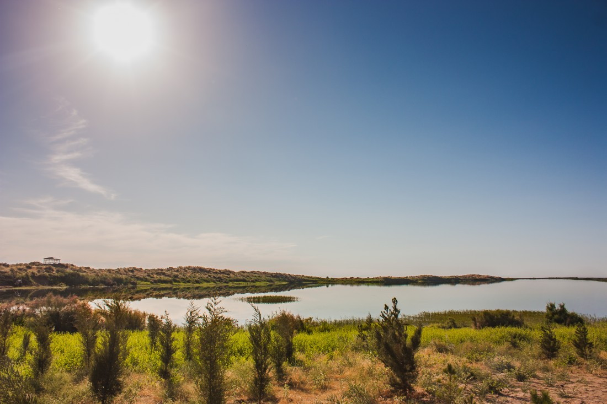

Заамин - Узбекская Швейцария
Потрясающие ландшафты и чистейший горный воздух, разнообразие фауны и растительного мира, древние места для паломничества и уникальная национальная здравница – это все Заамин.
Возраст Хивы насчитывает более 2500 лет. Хотите окунуться в историю и увидеть истинную красоту древнего Востока, посетите Хиву.
Климат
Летом в этом чудесном месте температура воздуха гораздо ниже, чем в соседних регионах из-за местной флоры. Но учтите, что температура днем и ночью из-за этого очень сильно разнится. Поэтому, даже в самый жаркий месяц берите с собой теплые вещи, они вам очень пригодятся! Зима тут тоже очень отличается от зим на всей территории Узбекистана. Обильные осадки, перепады температур и очень глубокий минус ждут вас в зимний период, но та красота, которую вы увидите, того стоит!
Подарки и сувениры
В районе Заамина среди сувенирной продукции в основном можно выделить магнитики с изображением местных достопримечательностей. Также местные мастера-ремесленники готовы удивить вас производством поделок из дерева и глины. В основном, это резные шкатулки с секретным замком, декоративные тарелки и еще множество интересных вещей. Гончары порадуют вас расписной посудой с неповторимыми местными узорами.
Кухня
Визитной карточкой гастрономии края является ни что иное как мясо! Основными блюдами можно назвать тандыр кабоб, джиз и конечно же джизакскую самсу. Тандыр кабоб это блюдо, придуманное кочевниками. Из-за того, что они постоянно находились в пути, им приходилось придумывать все новые и новые способы для удобной готовки в дороге, а что может быть проще мяса, приготовленного на костре? Для этого повара делали яму в земле глубиной около 70 см и закладывали туда мясо, предварительно заложив дрова. Вместе с мясом туда складывались ветки арчи, которыми также это мясо и натирается, чтобы получился тот самый необычный вкус. Джиз считается деликатесом, сейчас, конечно, это блюдо можно встретить почти в каждом городе, но придумали его именно в Джизакской области, что видно невооруженным взглядом из названия. Джиз готовится необычным способом, баранину сначала отваривают и потом обжаривают в собственном жире, что придает ей неповторимый вкус. Но основным блюдом региона по праву всегда остается самса. Местный способ приготовления самсы славится по всему Узбекистану, но, к сожалению, в отличии от большинства блюд, найти ее можно только в Джизакской области. Джизакская самса очень большая по сравнению с другими видами самсы в Республике, но готовят ее точно также как и остальные, в вертикальном тандыре. Почему же она не падает под весом всей начинки, спросите Вы ? Боюсь, что способ ее приготовления — это еще одна загадка сравнимая, наверное, только с вопросом о том, почему бутерброд падает маслом вниз. Еще больше про Узбекскую Кухню Вы сможете прочитать по этой ссылке.

История
Заамин — это очень интересное место для любителей природных путешествий. Этот не большой городок является центром горного района Джизакской области, и поверьте, лучшего места для поездки на природу вы не найдете! Природная красота этого места не оставит вас равнодушным. Горный воздух настолько прозрачный и чистый, что порой, с непривычки кружится голова.
Ароматы различных цветов и трав не оставят вас на протяжении всей поездки, меняя ароматы с такой частотой, что не успеваешь насладится всеми нотками этих удивительных запахов. Но помимо всей природной красоты, которую можно встретить, эта местность также славится древней историей. Здесь можно встретить руины крепостей и памятники из разных эпох. Но самой главной достопримечательностью является заповедник, созданный в 1960 году для сохранения уникальной природы этого места. Площадь этого парка достигает 10,5 гектаров и большую его часть занимают леса.
Также в заповеднике можно встретить горные цепи, ущелья и холмы. Самой высокой частью горной цепи является гора Шаукартау с высотой более 4000 метров. К знаковым местам этого парка можно отнести «Бобоёнгок» - древняя орешина, которой по приблизительным подсчетам около 700 лет. Его высота составляет 20 метров, а в диаметре он достигает почти 3 метра. Недалеко от заповедника, в местной деревне была найдена очень любопытная пещера. В ее недрах археологи нашли орудия труда первобытных людей, а стены пещеры украшены рисунками. На территории заповедника также расположен санаторий "Заамин" и еще несколько разных пансионатов и детских лагерей.